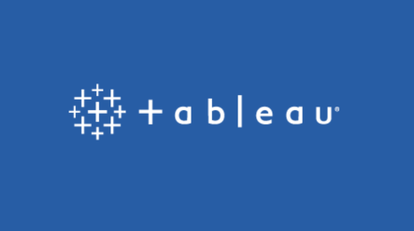

Hello and welcome to my data analyst portfolio website! My name is Abhinav, and I'm passionate about transforming data into actionable insights. Here, you'll find a collection of my projects, experiences, and skills in the field of data analysis. :)
About Me!
I am a data analyst with a strong background in statistical analysis, data visualization, and machine learning. I have a Bachelor's degree in Computer Engineering from NorthCap University and a Master's degree from the University of Windsor. I live in Toronto and have more than 3 years of experience working in various industries.
My journey into the world of data analysis began with a curiosity for uncovering patterns and trends hidden within data. Since then, I have honed my skills in data manipulation, cleaning, and analysis, utilizing tools such as Python, SQL, R, and Tableau to derive insights and make data-driven decisions.
HR Report Dashboard
I have developed an HR Analytics Dashboard using Power BI, which serves as a transformative tool for data-driven decision-making within my human resources department. Leveraging advanced data modeling techniques and visualizations, this dashboard offers comprehensive insights into various HR metrics, facilitating strategic workforce management.
Key Features:
Data Modeling with DAX: Through DAX calculations and measures, I've formulated complex HR analytics, such as turnover rates, employee performance trends, and workforce demographics.
Custom Columns and Measures: Custom calculations allow me to create tailored metrics specific to our organizational requirements, such as employee satisfaction scores, retention probability, and performance benchmarks.
Drill-Down Capabilities: The dashboard offers drill-down capabilities, enabling me to explore HR data at various levels of granularity. Whether examining departmental performance, individual employee metrics, or organizational trends, I can effortlessly drill down into specific data points to uncover insights and identify areas for improvement.
Real-Time Data Updates: I've integrated the dashboard with real-time data sources, ensuring that our HR metrics are continuously updated to reflect the latest information.
User-Friendly Interface: Designed with a user-centric approach, the dashboard features an intuitive interface that caters to HR professionals of all levels.
Patient Dashboard
Our Patient Dashboard offers healthcare providers real-time monitoring and visualization of patient data for efficient care delivery. Key features include customizable KPIs, clinical performance metrics, and patient risk stratification. With a user-friendly interface and secure data access, healthcare professionals can make informed decisions to improve patient outcomes and operational efficiency.
SQL Projects
Here, I've curated a collection of diverse projects spanning across healthcare, finance, e-commerce, and more. Each project offered comprehensive solutions, interactive demos, and emphasized the importance of code reusability and best practices in SQL development. My goal was to provide insights into real-world applications of SQL while enhancing my skills in database management and analytics. Explore these projects to learn and gain inspiration for your own SQL endeavors!
Superstore Profit Dashboard
I crafted a Tableau dashboard dedicated to analyzing profit metrics within the Superstore retail dataset. This dashboard offers a comprehensive overview of sales, profit margins, and performance across different product categories, regions, and customer segments. Through interactive visualizations and drill-down capabilities, users can identify trends, anomalies, and opportunities for optimization. Dive into this dashboard to gain actionable insights and drive strategic decision-making for maximizing profitability in the Superstore business.
World happiness report

I developed a Tableau dashboard focusing on the World Happiness Report. Utilizing advanced visualization techniques, I integrated interactive elements for in-depth analysis of happiness rankings, trend assessments, and correlation studies. Leveraging Tableau's features, I incorporated dynamic filters, calculated fields, and parameter controls, providing an immersive analytical experience. Exploring this dashboard enabled me to uncover nuanced insights into global happiness metrics, fostering data-driven decision-making and enhancing understanding of societal well-being trends.